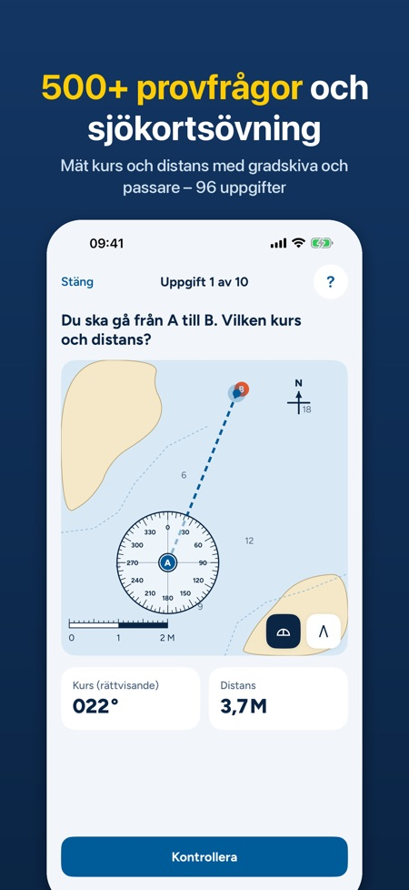
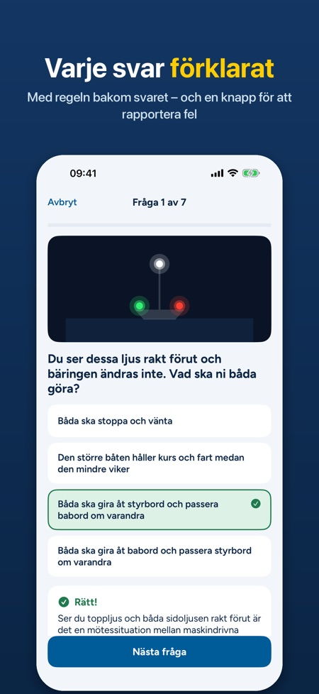
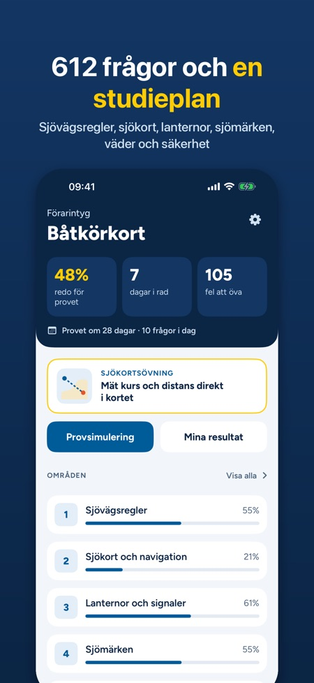

Öva teorin, sjökortet och provet för förarintyg för fritidsbåt i en och samma app. Varje svar förklaras med en hänvisning till regeln.



Provet för förarintyg för fritidsbåt, ofta kallat båtkörkortet.
612 egna övningsfrågor i 6 områden, plus 96 sjökortsuppgifter på 8 övningskort och 69 kort för lanternor och signaler.
90 minuter, uppbyggd som exempelprovet med tre delar som var och en har en egen gräns för godkänt.
Ja. Du ritar kursen från A till B, mäter med gradskiva och passare och skriver in kurs och distans. Facit visar din linje mot rätt linje.
Ja, övningarna fungerar utan internet. Inget konto och ingen reklam.
Nej, det är ett engångsköp som låser upp allt. Utan köp kan du prova bland annat 20 frågor om sjövägsregler, 2 sjökortsuppgifter och en hel provsimulering.
Nej, frågorna är skrivna av oss och appen har ingen koppling till Nämnden för båtlivsutbildning, Transportstyrelsen eller Sjöfartsverket.
Allt innehåll finns på svenska och engelska.
Ska du ta förarintyget för fritidsbåt? Öva på teorin, sjökortet och provet i en och samma app.
Plugga till förarintyget för fritidsbåt (båtkörkortet) med 612 egna övningsfrågor, interaktiva sjökortsuppgifter och provsimulering på tid. Varje svar förklaras med en hänvisning till regeln. Engångsköp, ingen prenumeration.
DET HÄR FINNS I APPEN
• 612 frågor i 6 områden: sjövägsregler, sjökort och navigation, lanternor och signaler, sjömärken, väder och säkerhet
• Förklaring och regelhänvisning efter varje svar (Sjövägsreglerna, IALA, Sjölagen m.fl.)
• 96 sjökortsuppgifter på 8 övningskort: rita kursen från A till B, mät med gradskiva och passare och skriv in kurs och distans. Facit visar din linje mot rätt linje – även uppgifter med missvisning och magnetisk kurs
• Sjömärken enligt IALA A: babord, styrbord, kardinalmärken, enstaka fara, mittled, specialmärken
• 69 kort för lanternor, dagersignaler, ljudsignaler och fyrkaraktärer, ritade så att du ser vad du ser på sjön
• Provsimulering på 90 minuter, uppbyggd som exempelprovet: tre delar med egen gräns för godkänt
• Mina fel: frågor du svarat fel på kommer tillbaka tills du kan dem två gånger i rad, med trend för veckan
• Studieplan efter ditt provdatum: nedräkning till provet, så många frågor om dagen behöver du och en daglig påminnelse om du vill
• 30 dagars provutmaning: ett kort pass om dagen och en provsimulering i veckan
• Provet sparas medan du skriver – stängs appen fortsätter du där du var
• Hittar du ett fel i en fråga? Tryck på ”Rapportera fel i frågan” under förklaringen
• Mörkt läge och stor text
• Allt innehåll på svenska och engelska
VARFÖR LITA PÅ FRÅGORNA
Varje svar har en regelhänvisning (Sjövägsreglerna, IALA, Sjölagen). Ser något fel ut skickar du en rad direkt från frågan, och vi rättar.
OM PROVET
Provet för förarintyg tar högst 90 minuter, har tre delar med egen gräns för godkänt och du ska ha fyllt 12 år. Provsimuleringen följer samma upplägg med våra egna frågor.
PROVA FÖRST
Utan köp kan du öva 20 frågor om sjövägsregler och 5 i varje annat område, 2 sjökortsuppgifter och de första korten, och göra en hel provsimulering – tre delar, 90 minuter – med resultat per del. Ett köp låser upp allt, för alltid. Inget konto, ingen reklam. Övningarna fungerar utan internet.
Appen är fristående och har ingen koppling till Nämnden för båtlivsutbildning, Transportstyrelsen eller Sjöfartsverket. Frågorna är skrivna av oss och är inte officiella provfrågor. Övningskorten är påhittade och inte avsedda för navigation. Appen skickar anonym användningsstatistik som du kan stänga av i Inställningar.